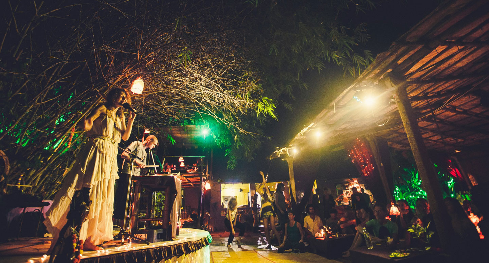
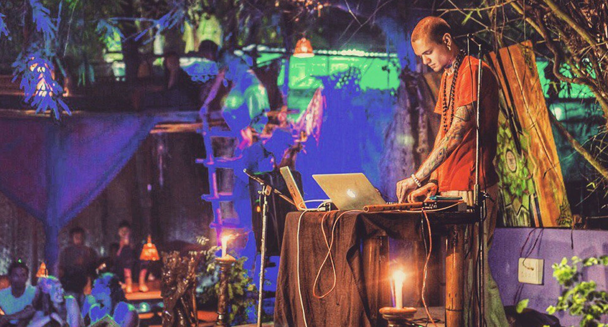

A new experimental 5-tracks release—ethno-futuristic landscapes filled by strings, Gregorian choir, an African harp and an Indian flute. Hyperrealistic panoramas, time and space deformation, hundreds of iridescent fractals of details that turn into downtempo, then hip-hop, then jazz. Links:
WAYVES is an experimental live electronic music that tells a story about inspiration, about the power that leads to a New and about an eternal fear of the unknown—the contradictions, giving birth to grotesque experiences accompanying life of probably everyone who has ever felt endlessly more than man, or even mankind.
WAYVES music is available on
iTunes, Google Music, Spotify, Beatport & Bandcamp
Management:
karachinsky@me.com / fb
WAYVES was founded by Sasha Karachinsky in St. Petersburg, Russia in the spring of 2015. Inspired by Enigma, Burial and many others, the WAYVES concept was specified as free mixture of electronic genres, live instruments and ethnic vocals.
Playing live electronic sets in Russia, India and Indonesia, with various collaborators (ArsNova string quartet, Julius Kotov—an opera singer, Veda Ram—ethnic and jazz vocalist) perfomance style was finally defined as one-man-band acoustic/live consisting of laptop with NI Maschine controller, bansuri (indian traditional flute) and armenian duduk.
Ethno-futuristic landscapes filled by strings, Gregorian choir, an African harp and an Indian flute. Hyperrealistic panoramas, time and space deformation, hundreds of iridescent fractals of details that turn into downtempo, then hip-hop, then jazz.
Change, refracting in their own perception. On the way to the goal, observe the transformation of the next person on the path, the transformation of the observer, the transformation of the goal. There are thousands of definitions of what we feel. Some of them are closer, some are farther from our perception at this moment.
After a few releases, I again turn to the language of World Music: I integrate elements of the culture of the East and South Asia into modern bass music, and I step a little into the field of psy genres. India is becoming more and more intertwined with me and more and more consciously manifests itself in the ornaments of new compositions.
Staring into the horizon, I see infinity. Sight is sticked to the line that cuts the water and the air, drawing the illusion. All cyclical. So they say. But I know everything has the end. This is the order of things, where each ending is a new beginning. Life begets death. With death comes another life. It only remains to be here. Where nothing and everything exists simultaneously. In the moment.
Here the circle ends—as you find yourself. And the music of the void sounds.


WAYVES music is available on
Bandcamp, Spotify, iTunes & Google Music
Management:
karachinsky@me.com / fb